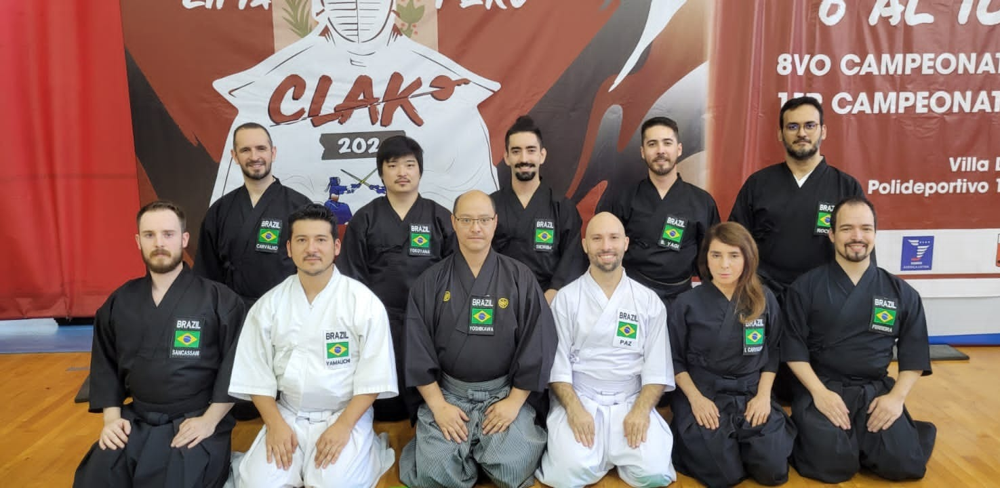

-
Primeiro brasileiro a alcançar o 7º Dan em Iaido
.jpg)
02/03/2025
No dia 02 de março de 2025, em Quioto, o Sensei Alexandre Pereira, Muso Jikiden Eishin Ryu, é o brasileiro com a maior graduação (Renshi 7º Dan) pela Federação Japonesa de Kendo (Zen Nihon Kendo Renmei - ZNKR). Um marco significativo para as artes marciais e o Iaido no Brasil. A conquista, que exige anos de dedicação, habilidade e conhecimento profundo, consolida a posição do Sensei Alexandre como um respeitado expoente da modalidade, sendo o primeiro brasileiro a alcançar esse patamar. O feito foi celebrado por seus alunos e colegas.
-
Seminário, Exame de Graduação e 3° Campeonato Latino-americano de Iaido - Buenos Aires, Argentina

07/05/2026
Nos dias 21 a 23 de novembro de 2026, em Buenos Aires, Argentina, ocorrerá o 3° Campeonato Latino-americano de Iaido, por meio da Federação Argentina de Kendo (FAK) e a Confederação Latino-americana de Iaido (CLAK). O evento também contará com um Seminário para instrutores de Iaido, assim como o Exame de Graduação até 7° Dan. As incrições deverão ser realizadas até dia 15 de agosto de 2026.
-
Seminário, Exame de Graduação e 11º Campeonato Brasileiro de Iaido - São Paulo
.jpg)
06/06/2026
Nos dias 15 e 16 de agosto, em São Paulo, ocorrerá o Seminário, Exame de Graduação e 11º Campeonato Brasileiro de Iaido, com apoio da Confederação Brasileira de Kendo (CBK). As inscrições deverão ser realizadas até dia 03 de julho de 2026. Estão programados no dia 15 o Seminário, que será realizado no Shizuoka Kenjikai (Rua Vergueiro, 193 - Liberdade, São Paulo - SP, 01504-001) e no dia 16 o Exame de Graduação e o Campeonato que ocorrerá no COTP - Centro Olímpico de Treinamento e Pesquisa Marechal Mário Ary Pires (Av. Ibirapuera, 1315 - Vila Clementino, São Paulo - SP, 04029- 000).